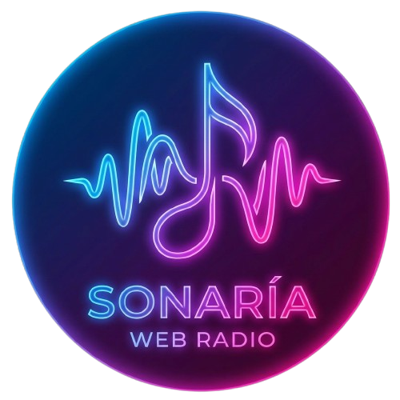
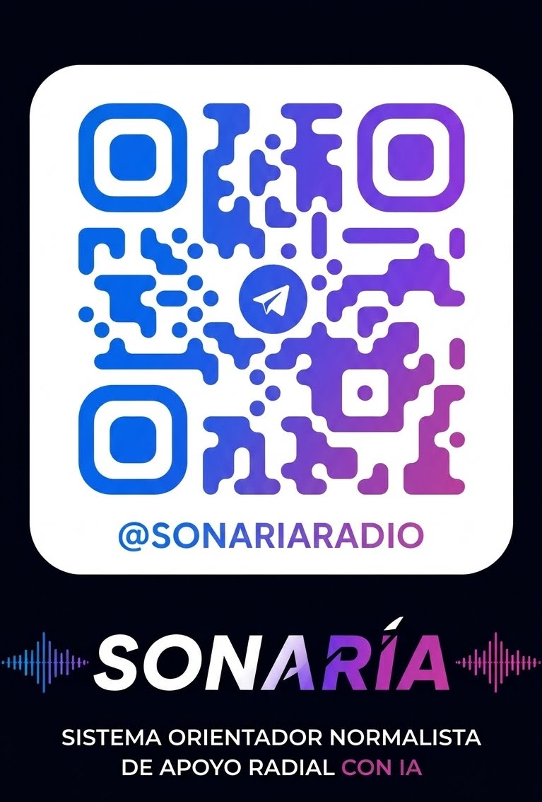

SonaríaRadio
Sistema Orientador Normalista De Apoyo Radial IA
EN VIVO
Sintonizando señal...
Escuela Normal Superior de Monterrey
Interactúa con la Radio
Pide tus canciones, envía dedicatorias y vota en el ranking diario directamente desde Telegram.
Abrir en Telegram
@SONARIARADIO